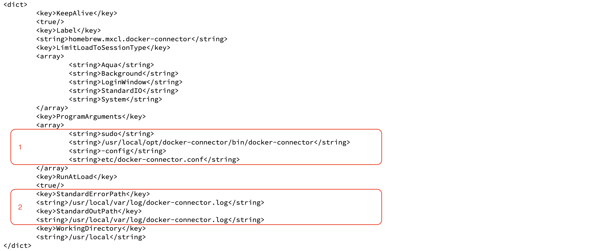
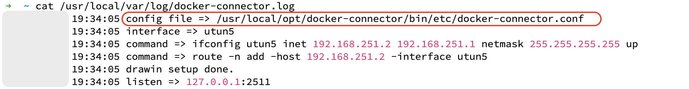

Docker Desktop for Mac 没有提供从宿主的macOS通过容器IP访问容器的方式。
通过 mac-docker-connector 可以将Mac宿主机与Docker容器网络打通，在此记录一下使用过程中遇到的问题。
运行环境：
- Intel处理器
- macOS 13.5
- Docker Engine v24.0.2
Docker端mac-docker-connector容器一直在重启
通过 docker logs CONTAINER 命令查看容器日志，发现报错信息：
Copied!
invalid address => host.docker.internal:2511
通过在运行容器的命令中增加 --add-host=host.docker.internal:host-gateway 选项解决：
docker run -it -d --restart always \
--net host --cap-add NET_ADMIN \
--add-host=host.docker.internal:host-gateway \
--name mac-connector wenjunxiao/mac-docker-connector
Mac端docker-connector.conf配置不生效，容器ping不通
通过命令找到启动 docker-connector 后台服务的plist文件：
sudo brew services list | grep docker-connector
查看plist文件：

从plist文件中可以得到两个信息：
- 启动命令：
sudo /usr/local/opt/docker-connector/bin/docker-connector -config etc/docker-connector.conf - 日志文件：
/usr/local/var/log/docker-connector.log
查看日志文件：

这个日志文件并不是之前配置的日志文件 /usr/local/etc/docker-connector.conf。
其实从启动命令中也可以看出这个问题，启动命令中的 -config 参数传入的配置文件是相对路径，也即是相对 docker-connector 所在的 /usr/local/opt/docker-connector/bin/ 目录。
找到问题之后，解决问题就比较简单了，进入 docker-connector 的安装目录 /usr/local/opt/docker-connector，修改 homebrew.mxcl.docker-connector.plist 中的配置文件路径即可。